Chap 5: Memory Hierarchy⚓︎
约 12985 个字 24 行代码 预计阅读时间 65 分钟
Introduction⚓︎
内存层级中涉及到的一个重要思想是「局部性原则」(principle of locality)，它由以下两部分组成：
-
时间局部性(temporal locality)：如果内存的某个项目被用到过，那么在短时间内它很有可能被再次使用
- 举例：循环中的指令很可能会被重复访问
-
空间局部性(spatial locality)：如果内存的某个项目被用到过，与它地址邻近的项目很可能在不久后也会被使用
- 举例：通常指令是按顺序执行的、按顺序访问数组元素
内存层级(memory hierarchy)：一种多级的存储结构，它规定：越靠近处理器的内存，它的访问时间更短、存储空间更小、成本更高。
- 更靠近处理器的一级内存是离处理器更远的内存的一个子集，且所有的数据被存储在最底层的内存中
- 在一个时间段内，数据只能在相邻的两个内存层级之间进行传输（复制
） ，因此在同一时间内我们仅关注相邻的两级内存结构
与内存层级相关的一些基本概念：
- 块 / 行 (block/line)：在两级内存结构中的最小信息单元（下图标出的蓝色方块）
-
命中(hit)：处理器所需的数据出现于上层内存中
- 命中率(hit rate)：能够在上层内存中找到数据的比率
- 命中时间(hit time)：访问上层内存所需的时间，包括判断是否命中或失效所需的时间
-
失效(miss)：处理器所需的数据不存在于上层内存中，此时需要访问下层内存的内容并检索所需数据
- 失效率(miss rate)（= 1 - 命中率
） ：未能在上层内存中找到数据的比率 - 失效损失(miss penalty)：从下层内存中获取所需数据块的时间，包括以下操作：访问数据块、将数据从下层传输到上层、将数据插入上层内存的合适位置、将数据块继续传给处理器
- 失效率(miss rate)（= 1 - 命中率
Memory Technologies⚓︎
内存中常用的四大工艺：
-
SRAM（静态随机访问存储器
） ：- 它只有一个访问端口，具备读和写的能力
- 尽管读和写的访问时间不同，访问任何数据所需的时间是固定的
- 由于无需刷新 (refresh)，因此访问时间接近于处理器的周期时间
- 通常，它用 6-8 个晶体管表示一个位，用于防止读取对存储信息的干扰
- 耗电少
-
DRAM（动态随机访问存储器
） ：- 1 位数据以电荷的形式被存储在 1 个电容中
- 因此需要周期性地对电容刷新(refresh) 以长时间保存电荷，具体做法就是读取并且写回该数据
- 为了减少刷新对访问时间的占用，DRAM 通过两级译码结构实现一次性刷新一整行的数据（这种行结构也有助于提升性能）
- 用 1 个晶体管对数据（电荷）进行访问（读 / 写
） （晶体管用比 SRAM 少，因此更便宜） -
DRAM 内部被划分为多个存储体(memory bank)，每个存储体都有一些行缓冲器(row buffer)，这样可以实现对同一地址的同步访问
- 假如有 n 个存储体，在一个访问时间内便能轮换访问 n 个存储体，使得带宽提升了 n 倍，这种轮换访问方法被称为地址交错 (address interleaving)
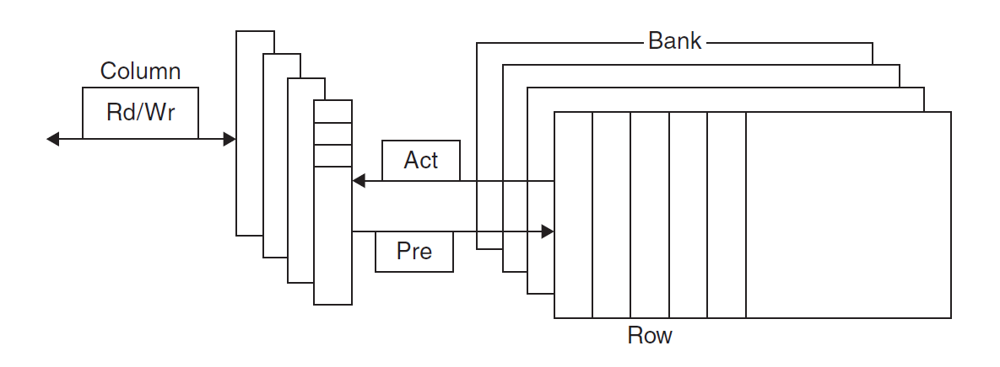 -
各种类型：
- SDRAM（同步 DRAM
） ：通过一个时钟来消除同步内存和寄存器所需的时间 - DDR(double data rate) SDRAM：能在时钟的上升沿和下降沿中进行数据传输，从而提升了一倍的带宽 (bandwidth)
- 双内联内存模块 (dual inline memory module)
- SDRAM（同步 DRAM
- 1 位数据以电荷的形式被存储在 1 个电容中
-
闪存(flash memory)：
- 它是一种电子可擦除、可编程只读存储器 (EEPROM)
- 写操作可能会磨损存储器内的数据
- 为减缓磨损，闪存会用一个控制器来分散 (spread) 写操作，这称为磨损均衡(wear leveling)
-
磁盘(disk memory)：
- 磁盘由一组绕轴旋转的金属盘片 (platter) 构成，盘片上覆有磁记录材料，通过一个读写头 (read-write head) 来读写信息，整个驱动器被密封在磁盘内部
- 迹 (track)：磁盘表面上的同心圆
- 区 (sector)：构成迹的某个片段，是能够被读写的最小单位的信息
- 柱面 (cylinder)：读写头下所有的迹（形成一个柱面）
- 磁材料上记录的序列：区号、间隔、包含纠错码的区信息、间隔、下个区的编号 ...
- 寻找 (seek)：定位读写头到要被访问的迹的过程
- 旋转时延 (rotation latency)：将要访问的区旋转至读写头下所需的时间，通常假设为旋转时间的一半
- 传输时间 (transfer time)
Basics of Caches⚓︎
缓存(cache)：在内存层级中表示介于处理器和主内存之间的层级，也可以指代任何借助局部访问优势的存储器。但本章内容所涉及到的「缓存」均指处理器内部的缓存。
先考虑一种很简单的缓存，以及一个很简单的情况：假如处理器请求一个单字数据 \(X_n\)，缓存的内容发生了如下的变化：

由于原来缓存内只有数据 \(X_1, X_2, \dots, X_{n-1}\)，因此 \(X_n\) 不在缓存内，所以出现了失效的情况，需要从更底层的内存中获取该数据，并且放在缓存中。那么我们如何得知数据是否在缓存中，且如何找到该数据呢？
最简单的方法是让每个字数据基于内存地址进行定位，这能够确保每个字数据占据唯一的一块空间，这种缓存结构称为直接映射缓存(direct-mapped cache)。可以用下面的公式计算字数据在缓存中的位置：
一般情况下，缓存块的个数是 2 的幂，那么这个模除运算就可以转化为对数运算 \(\log_2\)。
不难发现，可能会存在不同字数据占据相同缓存块的情况，这里我们用标签(tag) 来区分数据。因为底层内存的空间更大，因此通常会用数据在底层内存的低位地址来表示在缓存中的地址，而高位地址就作为区分相同缓存块下不同数据的标签，如下图所示：
上面的图片中，缓存块数为 8，而内存块数为 32，因此字数据内存地址的低 3 位对应它在缓存中的地址（灰色和蓝色表示两类低位地址
另外，我们还需要用一个称为合法位(valid bit) 的字段来指示内存块里的数据是否合法。
Cache Access⚓︎
例子
我们对一个八块的缓存进行九次访问：

下图展示了在访问过程中缓存内容的变化：

不难发现，第 8 次访问（\(\mathtt{18 = 10010}_{\text{two}}\)）与第 2 次访问（\(\mathtt{26 = 11010}_{\text{two}}\)）存在冲突，因为它们占据相同的缓存块。这种情况下，最近访问的数据将会占据该缓存块的位置（即覆写缓存块内已有的数据
下图展示了内存地址（假定为 64 位）与缓存位置之间的关系：
正如前面提到过的，我们可以将内存地址分为以下几部分：
- 标签字段：用于区别相同缓存块下的不同数据
- 缓存索引：用于选择缓存块
- 由于一个地址表示一个字节，并且在缓存中数据是以「字
」 （4 字节）为单位的，因此地址的低 2 位可以被忽略
计算直接映射缓存的空间大小
给定以下条件：
- 64 位的内存地址
- 共有 \(2^n\) 个缓存块，因此用 \(n\) 位地址来表示索引
- 每个缓存块可容纳 \(2^m\) 个字数据（即 \(2^{m+2}\) 字节的数据
） ，因此用 \(m\) 位地址来表示字
那么剩下用于表示标签字段的位数为：\(64 - (n + m + 2)\)
缓存空间大小的计算公式为：
对于上面给出的缓存，它有 \(2^{10}\) 个缓存块（有 10 位索引位
注
在一般的命名传统中，我们仅用缓存存储的子数据大小来表示缓存。对于上面的缓存，由于它一共可容纳 1024 个字数据，即 4096 字节的数据，因此可以称其为 4 KiB 缓存。
例题
若一个缓存可容纳 16 KiB 的数据，且每个缓存块可容纳四个字数据（假定使用 64 位地址
- 先计算缓存块的个数：由题意缓存可容纳 4096 个字，又因每个块可装四个字，因此一共有 1024 个块
- 标签位数为：64 - 10 - 2 - 2 = 50
- 所以总的空间大小为：
给定一个缓存，它有 64 块，每块空间为 16 字节，请问内存字节地址为 1200 的数据所映射到的块的编号为多少？
- 每个缓存块仅容纳一个字数据
- 该数据是内存中第 1200 / 16 = 75 个字数据
- 对应块编号 75 \% 64 = 11
- 实际上，内存地址在 1200-1215 之间的数据都会映射到这个缓存块上
现实的例子：The Intrinsity FastMATH 处理器的缓存

想要降低失效率 (miss rate)，一种可行的方法是适当增加每个缓存块的大小。然而，如果缓存块的空间过大，对于相同空间大小的缓存，那么该缓存的块数就会减小，那么就会产生更多的数据竞争问题，因此此时失效率反而会升高。下图便展示了这一结果，其中不同曲线表示不同的缓存大小：
事实上，增大缓存块的空间还会增大失效损失 (miss penalty)，因为更大的缓存块意味着更久的传输时间。如果缓存块过大，由于失效率降低的效果更不明显，且失效损失会越来越大，因此最终会带来缓存性能的损失。
补充
下面给出一些减缓因增大缓存块而带来的失效损失增大的方法：
- 早重启 (early restart)：当所需字数据还未返回时，令处理器继续执行后面的操作，而不是等下去。这种方法更适用于指令缓存中，但在数据缓存中表现效果不太好
- 需求字优先 / 关键字优先 (requested/critical word first)：对内存进行组织，使得处理器请求的字数据得以优先进行传输，随后再传输其他不是那么重要的数据。该方法比早重启略快一些，但也有与前者同样的限制
Handling Cache Misses⚓︎
缓存失效(cache miss)：处理器向缓存请求当前不存在于缓存中的数据，可分为指令失效 (instruction miss) 和数据失效 (data miss) 两类，由处理器的控制单元和一个单独的控制器（初始化内存访问 + 重新填充缓存数据）共同处理。具体来说，指令失效和数据失效的处理方法是类似的，都遵循下面的步骤（这里以指令缓存为例
- 向内存发送原来的 PC 值
- 令主内存执行读取操作，并等待内存完成访问
- 将从内存中读到的数据放入缓存对应位置上，将内存地址的高位写入标签字段，并将合法位置 1
- 重新执行第 1 步所对应的指令，此时处理器成功地在缓存中获取正确的指令
Handling Writes⚓︎
对缓存进行写操作时需要考虑以下问题：执行存储指令时，我们会向缓存写入一个新的数据，但由于此时并没有改变底下内存的数据，因此内存和缓存的数据就存在不一致 (inconsistent) 的现象。
下面提供了两类解决方案：
-
写穿(write-through)：在更新缓存数据的同时也要更新底层内存对应的数据，这样能始终保证两者的一致性
- 这种方法简单粗暴，但是执行起来太慢了，因为每次向缓存写入数据就意味着要改变主内存的数据，要知道访问主内存的速度是很慢的（具体可以看教材的例子）
- 补救措施：添加一个写缓冲器(write buffer)，它保存那些需要写入主内存的数据，此时向缓存写入数据后只需对写缓冲器进行写操作即可，处理器仍可以继续执行
- 若缓冲器的内容被填满的话，处理器就不得不停下来，先让缓冲器向主内存写入数据、腾出一点空间后，它才能继续执行
- 然而，如果向主内存写入数据的速度慢于处理器产生写操作的速度，那么无论多大的缓冲器都没有用
-
写回(write-back)：执行写操作仅改变缓存的数据；当这个缓存块的数据要被新数据取代时，则将原数据写入底层的内存中
- 相比上一种方法，它提升了性能，但也变得更复杂
这里还缺了些东西，之后再补
补充
- 等价于两个分离缓存 (split cache)（指令缓存 + 数据缓存）的空间大小的组合缓存 (combined cache) 通常会具备更好的命中率，因为它能够同时执行指令访问和数据访问（即带宽增加）
- 但实际上用得更多的还是分离的指令和数据缓存
Cache Performance Measurement and Improvement⚓︎
Cache Performance Measurement⚓︎
注意
我们仅考虑最最简单的模型，实际情况很难用下面的公式来刻画！
在第 1 章中，我们已经知道处理器的性能与处理器的执行时间呈反比，并且给出了 CPU 时间的计算公式。现在将缓存给考虑进去——因为失效问题，缓存可能会引入额外的周期数，因此需要对原公式进行修改，得到以下公式：
失效问题可以来自读操作，也可来自写操作：
读操作部分计算相对简单：
写操作就比较复杂了，方便起见，我们假定使用「写穿」(write-through) 策略。此时停顿的原因可分为两类：写失效（要求我们在继续写操作前先获取该缓存块
- 我们很难用具体公式描述写缓冲器的停顿，因为它不仅与写操作的频率相关，还和写操作的接近程度 (proximity) 相关
- 然而，如果提供了足够深度的写缓冲器，且内存接受写操作的速度快于处理器生成写操作的速度，那么写缓冲器的停顿就变得很小，可以忽略不计
在大多数采取「写穿」策略的缓存中，读和写的失效损失大致相等。假如不计写缓冲器停顿时间，那么可以同时考虑读和写操作，即：
例题
假设有一个缓存，它有以下特征：
- 指令缓存的失效率为 2%，数据缓存的失效率为 4%
- 若处理器在没有任何内存停顿的情况下，CPI = 2
- 对于所有的失效，失效损失为 100 个时钟周期
- 加载和失效指令的频率为 36%
那么一个带有不发生任何停顿的完美缓存的处理器比带此类缓存的处理器快了多少倍？
令 \(I\) 为指令数，则：
因此算入内存停顿后，\(\text{CPI} = 2 + 3.44 = 5.44\)，与未停顿的 \(\text{CPI}\) 算个比值，得到 \(\dfrac{5.44}{2} = 2.72\)，即完美处理器性能是一般处理器的 2.72 倍。
注意
如果只提升 CPU 的速度（比如提高 CPU 的时钟频率，降低周期数等等
补充知识：无序处理器的性能衡量
仅做了解即可
对于此类处理器，会用“每条指令的失效情况”来衡量处理器的性能，公式为：
其中重叠的失效时延 (overlapped miss latency) 很难直接计算出来。
硬件设计师们还会用平均内存访问时间(average memory access time, AMAT) 这一指标来衡量缓存性能，因为它能同时反映命中和失效的情况，公式如下：
接下来，我们从两方面对缓存的性能进行改进，之后会逐一介绍这些内容：
- 降低失效率：联合置放方案 (associative placement schemes)，包括全联合、组联合等
- 降低失效损失：多级缓存
Miss Rates Reduction⚓︎
在前面已经介绍过直接映射这一类简单的置放方案：一个数据块对应于缓存的唯一位置。下面将介绍其余两种置放方案：
-
全联合(fully-associative)：一个数据块可以放在缓存的任意位置上
- 它的优势在于选择空间的增大，使得缓存失效发生的次数减少
- 要想在这种缓存里找到指定的数据，需要查找所有缓存块的所有标签
- 较为实际的做法是用比较器 (comparator) 进行并行查找，提高查找速度，但显然会引入更大的硬件开销
-
组联合(set-associative)：一个数据块可以放在固定大小（\(\ge 2\)）范围内的任意位置上
- 若数据块可放在 \(n\) 个位置中的任意一个，则称该缓存为 \(n\) 路 (n-way) 组联合缓存
- \(n\) 路组联合缓存可分为多个组，每个组由 \(n\) 个缓存块构成，缓存块的数据可被组内任意的元素替代
- 内存中的数据块根据内存地址，映射到缓存中唯一的某个组
- 内存块在缓存中的大致位置（位于哪个组）的计算：
\[ (\text{Block number}) \text{ modulo } (\text{Number of } sets \text{ in the cache}) \]- 要想找到内存块在缓存中的精确位置，需要查找它所在组内所有元素的所有标签
下面这张图展示了这三类缓存置放方案的区别：
事实上，我们可以把直接映射和全联合两种方式看作组联合的两种特殊情况。以带有 8 个缓存块的缓存为例，直接映射是一种单路 (one-way) 组联合，而全联合是一种 8 路组联合，如下图所示：
例题
假设有一个具有 4 个单字缓存块的缓存，分别计算在采用以下三种不同置放方案后，根据以下给出的访问内存地址序列：0, 8, 0, 6, 8，计算缓存的失效次数。
- 全联合
- 2 路组联合
- 直接映射

失效次数：5

失效次数：4
失效次数：3
下图展示了一个缓存块大小为 16 字的 64KiB 缓存，在采用不同的置放方案后，数据失效率的提升水平：
下面考虑如何在组联合缓存中寻找缓存块。与直接映射缓存一样，我们将内存地址划分为以下几个字段：
- 标签(tag)：用于区分同一组内的不同缓存块
- 需要通过比较器实现并行查找，对于 n 路组联合缓存，需要有 n 个比较器，以及一个 n-1 多路选择器
- 索引(index)：用于区分不同的组
- 对于全联合缓存，它没有索引位，因为它只有一个组
- \(n\) 位索引表示 \(2^n\) 个组
- 块偏移量 (block offset)：表示单个缓存块的大小，块偏移量为 \(x\) 表示大小为 \(2^x\) 字节 = \(2^{x-2}\) 字
例题
假设一个缓存有 4096 个缓存块，每个块的大小为 4 字，并且内存采用 64 位地址。请计算在直接映射、两路组联合、四路组联合以及全联合的置放方案下缓存的组数以及总的标签位数。
- 每个块的大小为 16 字节，因此块偏移量为 4，那么标签位和索引位的位数之和为 64 - 4 = 60
- 直接映射：组数 = 块数，因此索引位数为 \(\log_2(4096) = 12\)，那么总的标签位数为 (60 - 12) * 4096 = 197Kb
- 两路组联合：组数 = 块数 - \(\log_2(2)\)，总的标签位数为 (60 - 12 + 1) * 2048 * 2 = 401Kb
- 四路组联合：组数 = 块数 - \(\log_2(4)\)，总的标签位数为 (60 - 12 + 2) * 1024 * 4 = 205Kb
- 全联合：60 * 4096 * 1 = 246Kb
下面展示一个 4 路组联合缓存的原理图：
不难发现，访问一个联合缓存需要先选择某个组，然后在组内进行查找，这带来了因比较和选择而产生的延时成本，因此在选择置放方案时需要权衡好失效 (miss) 成本和联合 (associativity) 成本。
在缓存中访问某个数据时，可能存在失效的情况，即该数据的对应缓存块已经放了别的数据。不同的置放方案会有不同的处理策略：
- 直接映射：由于数据在缓存中的位置是唯一的，所以新访问的数据就直接替代原来缓存块内的数据
- 全联合：由于可以随机访问缓存的任一位置，因此每个缓存块的原始数据都有被新数据替代的可能
- 组联合：新来的数据可能替代它所在组内的任何缓存块中的数据
- 通常采取最早使用(least recently used, LRU) 策略，即那些很久没有被访问过的数据会优先被新数据替代掉
- 实现这一策略需要跟踪组内缓存块数据的使用情况，对于 2 路组联合缓存来说只需额外保留 1 位即可，但对于更多分路的组联合，实现该策略就想对比较困难了
Miss Penalties Reduction⚓︎
解决方案：多级缓存(multilevel cache)。为了便于分析，下面以二级缓存为例：
增加一个二级缓存（原来的缓存为一级缓存
在一个二级结构的缓存中：
- 一级缓存专注于最小化命中时间，这样便可以实现更短的时钟周期或流水线阶段
- 整个缓存空间更小，缓存块的大小也随之更小，以减小失效损失
- 二级缓存专注于减少失效损失
- 相对来说空间会更大，且采用更高度的联合置放，以降低失效率
补充：多级缓存的不同失效率
在多级缓存中，对失效问题的考虑会更复杂些，比如失效率会分为以下两类：
- 全局 (global) 失效率：所有层级的缓存均失效（此时不得不访问主存了）的几率
- 局部 (local) 失效率：各层级缓存内失效的几率
例子
- 有一块 CPI 为 1.0，时钟频率为 4GHz 的处理器
- 访问主存的时间为 100ns
- 一级缓存的每条指令失效率为 2%
- 如果加上一块访问时间为 5ns，且能将失效率降至 0.5% 的二级缓存，处理器将会变得多块？
- 主存的失效损失：\(\dfrac{100\text{ns}}{0.25\frac{\text{ns}}{\text{clock cycle}}} = 400 \text{ clock cycles}\)
- 只有一级缓存的处理器的 \(\text{Total CPI} = 1.0 + 2% \times 400 = 9\)
- 二级缓存的失效损失：\(\dfrac{5\text{ns}}{0.25\frac{\text{ns}}{\text{clock cycle}}} = 20 \text{ clock cycles}\)
- 加上二级缓存的处理器的 \(\text{Total CPI} = 1.0 + 2% \times 20 + 0.5% \times 400 = 3.4\)
- 所以加了二级缓存后，性能提升了 \(\dfrac{9}{3.4} = 2.6\) 倍！
Software Optimization⚓︎
下面我们以矩阵乘法的计算为例，介绍一下如何从软件层面来利用内存层级，从而提升执行程序的性能。
先给出原始的矩阵乘法代码（只给出内层循环部分
for (int j = 0; j < n; ++j) {
double cij = C[i + j * n]; // cij = c[i][j]
for (int k = 0; k < n; k++)
cij += A[i + k * n] * B[k + j * n] // cij += A[i][k] * B[k][j]
c[i + j * n] = cij;
}
我们当然希望能够将三张完整的矩阵都放在缓存里，这样访问速度就很快了。然而，万一矩阵很大很大，缓存里放不下，那么就需要将矩阵划分为块 (block)，一块块地计算矩阵乘法。下面给出这种「块算法」的代码：
#define BLOCKSIZE 32
void do_block(int n, int si, int sj, int sk, double * A, double * B, double * C) {
for (int i = si; i < si + BLOCKSIZE; ++i)
for (int j = sj; j < sj + BLOCKSIZE; ++j) {
double cij = C[i + j * n];
for (int k = sk; k < sk + BLOCKSIZE; k++)
cij += A[i + k * n] * B[k + j * n];
C[i + j * n] = cij;
}
}
void dgemm(int n, double * A, double * B, double * C) {
for (int sj = 0; sj < n; sj += BLOCKSIZE)
for (int si = 0; si < n; si += BLOCKSIZE)
for (int sk = 0; sk < n; sk += BLOCKSIZE)
do_block(n, si, sj, sk, A, B, C);
}
- 这种块算法利用了局部性原则：矩阵 A 利用了空间局部性，矩阵 B 利用了时间局部性
- 在 gcc 的优化器 (optimizer) 中，
dgemm()函数对do_block()函数的调用会被替换为对应的代码（称为内联 (inlining)） - 优化前后的效果比较：
Dependable Memory Hierarchy⚓︎
PPT 没有，应该不考
Failure⚓︎
系统传递给用户的服务 (service) 具有两种状态：
- 服务实现(service accomplishment)：传递的服务与指定的服务相同
- 服务中断(service interrupt)：传递的服务与指定的服务不同
从状态 1 到状态 2 的过程称为失败(failures)，从状态 2 到状态 1 的过程称为恢复(restorations)。失败可以分为永久性的 (permenant) 和间歇性的 (intermittent)，其中前者较好诊断出来，而后者由于会在两个状态间振荡，因此不太好诊断。由此，我们引出了两个相关的术语：
- 可靠性(reliability)：测量连续的服务实现，或者说失败时间
- 衡量服务实现的指标：平均失败时间(mean time to failure, MTTF)、一年失败率(annual failure rate, AFR)（1 年内所有设备失败的比例）
- 衡量服务失败的指标：平均修复时间(mean time to repair, MTTR)、平均失败间隔时间(mean time between failures, MTBF)
- MTBF = MTTF + MTTR
-
可用性(availability)：测量服务实现和中断状态交替的情况
- 公式：\(\text{Availability} = \dfrac{\text{MTTF}}{\text{MTTF + MTTR}}\)
- 我们希望可用性保持在相当高的水平：

- 提升可用性的方法
- 错误 (fault)：系统中某个部件 (component) 的失败
- 降低 MTTR：提供用于错误侦测、诊断和修复的工具
- 提升 MTTF：
- 错误回避 (fault avoidance)：通过构建避免错误发生
- 错误容忍 (fault tolerance)：使用冗余来允许对服务的接受，尽管发生错误
- 错误预报 (fault forecasting)：预测错误的存在和创造，允许部件在失败前被替换
SEC & DED⚓︎
注
这里的内容体现了“通过冗余提高可靠性”的思想。
- 汉明距离 (Hamming distance)：任意两个纠错码之间的最小的不同位数
- 错误检测码(error detection code)：一种能够发现数据的错误，但不一定能够找到精确位置（即不能纠错）的编码
-
奇偶校验码：记录原数据
1的个数，若为奇数，则奇偶校验码为 1，否则为 0。原来的 N 位数据扩展到 N+1 位，存放这个额外位- 问题：它只能检测奇数个位的错误，而无法检测偶数个位的错误，因此不能实现纠错效果
-
汉明纠错码(Hamming error correction code, ECC)，它的汉明距离为 3，计算步骤为：
- 低位放左边，高位放右边，记最左边为第 1 位
- 令 2 的幂次位（第 1、2、4、8... 位）为奇偶校验位，其他位作为数据位
- 对于第 \(2^i\) 位上的奇偶位，它负责位置编号满足第 \(i\) 为为 1 的数据位（比如第 4 位上的奇偶位会检查 2,3,6,7,10,11 等位）
- 将所有奇偶位拼起来（右边低位
） ，它可以直接反映哪一位上的数据有误（比如拼起来为 1010，表示第 10 位（第 6 个数据位）上的数据有误） ，从而可以实现纠错
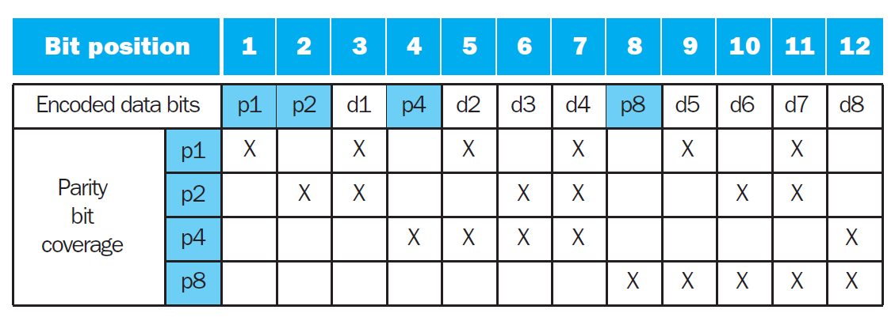例题
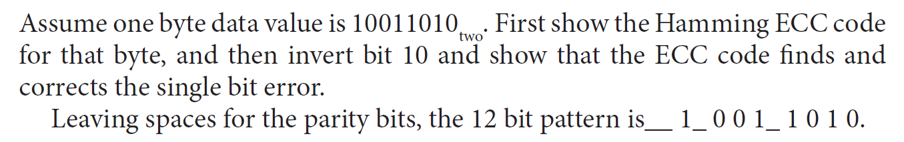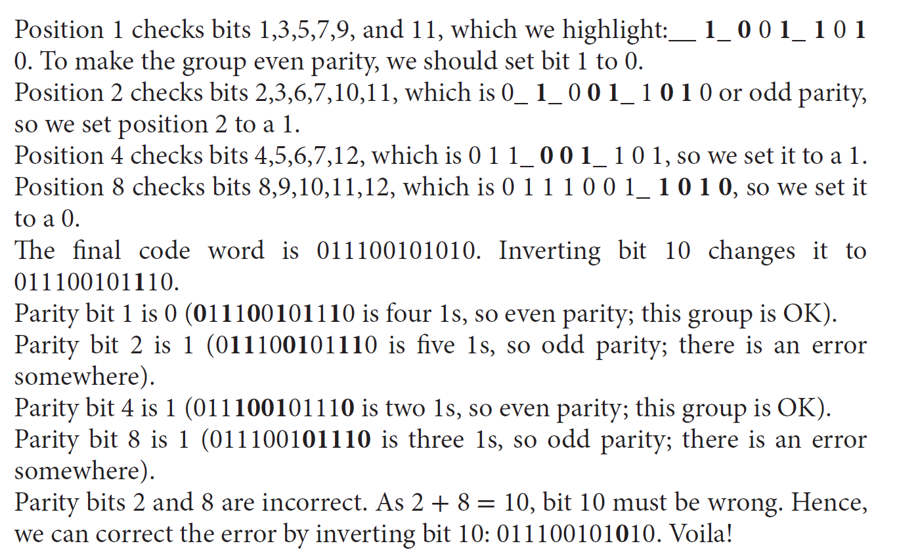 -
改进——单位纠正 / 双位检测 (single error correcting/double error detecting, SEC/DED)：额外增加 1 个奇偶位，用于检测数据上所有位的错误，这样可以在实现单位纠错的基础上，实现双位检测错误的功能 ~
- 记原来的奇偶位组为 H，新增的奇偶位为 p，分类讨论：
- H 有偶数个 1，且 p=0：没有错误发生
- H 有奇数个 1，且 p=1：可纠正的单位错误发生
- H 有偶数个 1，且 p=1：数据位没有错，但奇偶位 p 发生错误，需要纠正
- H 有奇数个 1，且 p=0：发生两位错误
- 记原来的奇偶位组为 H，新增的奇偶位为 p，分类讨论：
Virtual Machine⚓︎
仅做了解即可
这里讨论的虚拟机(virtual machine) 是能够在指令集架构层级下提供一个完整的系统级环境的虚拟机，所以也称为（操作）系统虚拟机 ((operating) system virtual machine)。关于虚拟机的术语有：
- 虚拟机监控器(virtual machine monitor/hypervisor)：支持虚拟机的软件，是虚拟机的核心部分，决定如何将虚拟资源映射到物理资源上
- 基本需求：
- 至少有两种处理器模式：系统和用户（默认情况下处于用户模式）
- 特权指令子集只能在系统模式下被使用，这些指令用于控制系统资源
- 很多指令集架构（包括 x86、MIPS、ARMv7 等）在设计之初并未考虑到虚拟化 (virtualization) 的问题，因此虚拟机无法支持这些 ISA 下的所有指令
- 基本需求：
- 宿主机(host)：底层的硬件平台
- 客户机(guest)：共享的资源
- 客户机软件表现得好像运行在本地硬件上（除了性能相关的行为，以及多台虚拟机共享固定资源的限制外）
- 客户机软件不应直接改变真实系统资源
虚拟机的意义：
- 提升保护：
- 管理软件：能够使用过去的、现在的、未来的 OS
- 管理硬件：
Virtual Memory⚓︎
虚拟内存(virtual memory)：使主存表现得像作为二级存储的“缓存“一样的一种技术。我们需要虚拟内存的原因有：
- 允许程序之间高效且安全的内存共享

- 保护了虚拟机，虚拟机在运行时会动态改变共享内存
- 用到了局部性原则
- 将程序的负载分为主存内有限的小块空间
- 允许单用户程序使用超过基础内存大小的空间
- 以前，若一个程序所需空间过大，需要由程序员使用各种技巧使得程序能够被容纳下，所以相当地麻烦
相关术语：
-
地址空间(address space)：一块单独的内存地址范围，这块空间只能被某个特定程序访问。虚拟内存所做的就是将程序的地址空间转译至物理地址
- 地址转译 / 映射(address translation/mapping)：将虚拟地址映射到被访问内存的物理地址的过程
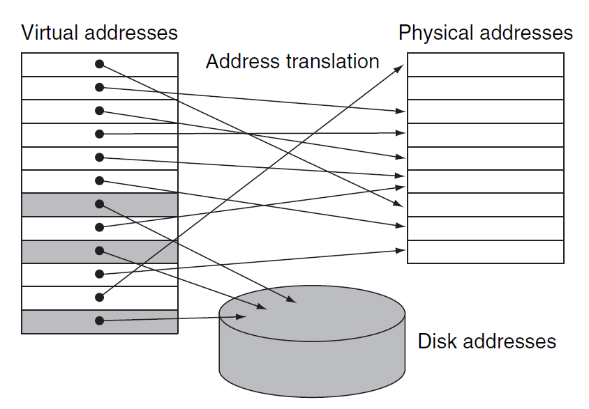-
虚拟地址(virtual address)：关联虚拟空间（应该就是地址空间）位置的地址，它会被转译为被访问内存的物理地址 (physical address) 上
- 虚拟地址被划分为虚拟页编号(virtual page number) 和页偏移量(page offset)，其中虚拟页编号会被转译为物理页编号；而页偏移量保持不变，它表示的是页的大小
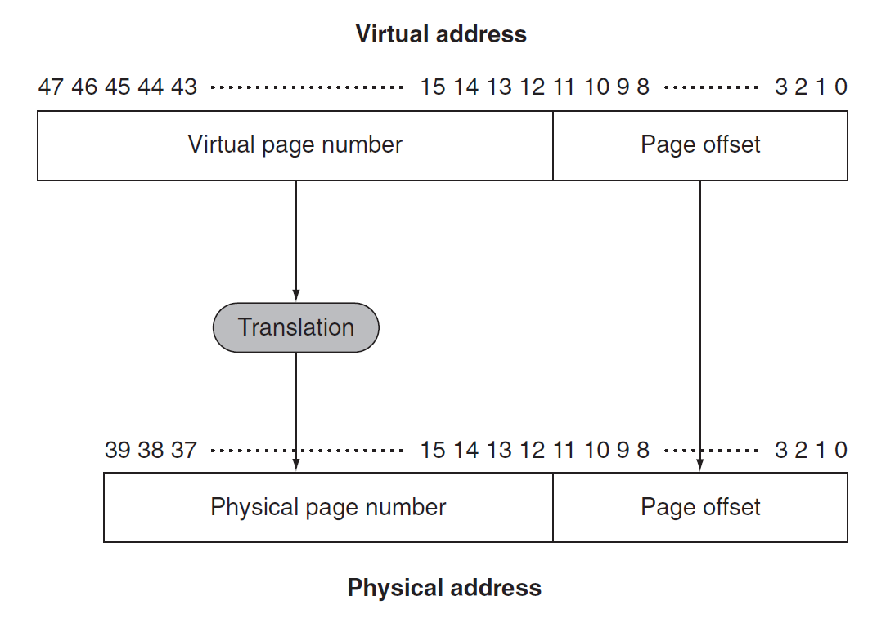- 在 RISC-V 中，64 位的地址中高 16 位不会被用到，因此虚拟地址只有 48 位；同时假设物理内存有 1TiB 大，因此物理地址有 40 位。一般情况下虚拟地址的位数都会比物理地址的大
-
保护(protection)：一种确保共享处理器、内存或 I/O 设备的多个进程互不干扰（比如一个进程读 / 写另一个进程的数据等）的机制
- 该机制隔离了某个程序的地址空间与其他虚拟机的物理地址
- 同时也隔离了用户与操作系统
-
页(page)：虚拟内存块
- 页错误(page fault)：访问不在主存中的页
-
重定位(relocation)：将程序所用的虚拟地址映射到不同的物理地址上（在这些物理地址被用于访问内存之前
） ，这样就可以在内存的任意位置上加载程序了- 在重定位的时候会将程序看作一组固定大小的页
由于一次页错误就会带来极大的时钟数损失，因此在设计虚拟内存系统时需要注意以下几点：
- 页的大小要足够大，以便尝试摊还较高的访问时间
- 合理的内存组织（比如全联合置放法）能够降低页错误率
- 可以使用软件来解决页错误问题
- 在虚拟内存中使用写回(write-back) 策略（写穿耗时太长）
- 在页表（后面会讲到）中会额外使用一个脏位(dirty bit) 来追踪某个页是否在被读入内存后被覆写，置位表示被覆写，这种被覆写的页被称为脏页(dirty page)
Placement and Page Faults⚓︎
由于页错误的损失大的吓人，所以在虚拟内存中采用的置放方案是全联合(fully-associative)，但全联合的问题在于：由于所有数据都是任意放置的，因此需要在整个内存中进行寻找，这显然是不现实的。解决方案是使用一张页表(page table)，它记录了虚拟内存系统中虚拟地址与物理地址之间的映射关系，存在内存中，使用虚拟页编号作为索引，而表中的每一项就是虚拟页对应的物理页编号（如果这个页在内存中的话
- 为了找到页表，还需额外使用一个页表寄存器(page table register) 来指示页表的起始位置（假设页表是固定且连续的）
- 虚拟机的状态 (state) 由页表、程序计数器和寄存器三者共同决定，状态也被称作进程 (process)，如果它正在被处理器处理，那么认为它是活跃 (active)，否则认为它是不活跃的 (inactive)
下图展示了加上页表寄存器和页表后的地址转译过程：
- 页表中的每一项都添加了一个合法位(valid bit)，功能与缓存中的类似：
- 若其值为 0，表明该页不在主存中，那么就会发生页错误了
- 若其值为 1，表明该页在主存中，那么该项就包含了物理页编号了
- 由于页表包含了所有可能的虚拟页的映射关系，因此无需标签位，而索引位就是虚拟页编号
当页错误发生时，通过异常机制（第 4 章介绍过，但这里的具体实现有所不同）让操作系统获取控制权，它会在内存层级的下一级中寻找这个页，并决定这个页的置放位置。由于我们无法提前知道这个页会被放在内存中的哪个位置，因此需要在内存中保留一些空间用于放置这样的页，这个空间被称为交换空间(swap space)。它同时也创建了一个记录每个虚拟页的存储情况的数据结构，该数据结构可以是页表的某个部分，也可以是一个类似页表的辅助数据结构。
下图展示了一个既记录了物理页编号，也记录了二级内存地址的单张页表（灰色部分就是交换空间内的元素
操作系统同时也创建了一个用于跟踪每个物理页使用进程或虚拟地址的情况的数据结构。当页错误发生时，如果主存中的每个页都被使用，那么操作系统必须选择其中一个要被替换的页，此时采取的策略是LRU（least recently used, 最早使用
由于采取精确的 LRU 策略过于复杂（需要记录每个页的使用情况
Virtual Memory for Large Virtual Addresses⚓︎
由于 RISC-V 的虚拟地址是 48 位，每个页的大小为 4KiB，因此一张页表就要 0.5TiB 的空间，而每个进程都需要一张页表，如果直接存储这些页表是不现实的，所以需要采用一些技术来减小页表的存储，下面介绍这些技术：
-
保留一个限制寄存器，用于限制每个给定进程的页的大小（设置一个阈值
） ，若虚拟页编号大于寄存器的阈值时，则在页表中新开一个条目。这个技术需要确保地址空间是单向扩展的 -
将页表分为两个单独的小页表（每个页表有单独的限制
） ，一张页表从高地址向下扩展（对应堆结构） ，另一张页表从低地址向上扩展（对应栈结构）- 这样将地址空间划分为两段，此时高位地址用于决定使用哪个段。每个段的限制寄存器制定了当前段的大小
- 然而，应用程序还会认为是一个完整的段
- 缺点：在非连续、稀疏的地址空间上表现不佳
-
对虚拟地址使用散列函数，这样得到的结构称为逆页表(inverted page table)，由于不再使用索引，因此查找起来就比较复杂
-
将每个页表当作一个页存放起来
-
使用多级页表能够有效减少页表所需存储空间（RISC-V 的做法
！ ）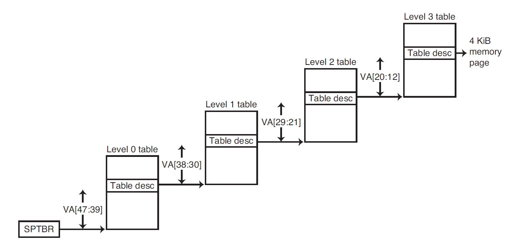这里我们使用了四级页表，每个页表负责 9 位地址（虚拟页编号占 36 位
） ，从高位地址开始寻找。如果在某个页表中找到了的话（即合法位为 1） ，那么继续到下一级页表中寻找，直至最后一个页表。- 这种方法允许虚拟地址是稀疏的，非连续的
- 缺点：地址转译的过程会变得更复杂
TLB⚓︎
转译 - 旁路缓冲器(translation-lookaside buffer, TLB)：一块用于追踪最近使用过的地址映射的缓存，以尝试避免访问页表。它利用了局部性原则，由于直接保存了物理地址，因此无需再次转译，从而实现加速访问。下图展示了添加 TLB 后的访问内存过程：
- 其中 TLB 中的每个项的标签位保存了虚拟页编号，而数据位保存了物理页编号，同时也保留了页表中的几个状态位（合法位、引用位、脏位等）
-
TLB 也可以在多级页表中使用，此时 TLB 只记录物理地址和来自最后一级页表的标签
-
如果访问 TLB 时出现失效(miss)，那么还需要进一步判断这是否是一个页错误，因此接下来要访问（最后一级）页表。如果在页表中都没找到，那么页错误就发生了。显然 TLB 失效比页错误发生地更频繁些
- 解决流程：使用异常机制——中断当前活跃的进程，将控制权转移给操作系统，之后继续执行被中断的进程
- 使用寄存器 SPEC 保存被中断的指令，以便之后继续执行
- TLB 失效或页错误需要在当前时钟周期结束时及时声明，这样的话下一个时钟周期就会执行异常进程而非后面的正常指令，及时防止可能得写入操作带来的破坏
- 有时操作系统会遇到处理多个异常的情况，如果不做特殊处理，后来的异常就会覆盖先前异常的状态，从而无法返回到对应的发生页错误的指令。因此需要对异常进行启用(enable) 或禁用(disable)，当处理一个异常时，应当禁用其他所有的异常，并用 SPEC 和 SCAUSE 寄存器保存状态，以便回到原来的指令。这时再启用其他的异常处理就不会造成破坏了。
- 操作系统具体要做的事：
- 使用虚拟地址查找页表，在二级内存中找到对应的页的位置
- 选择要被替代的物理页，如果此页的脏位置 1，那么还需要先将它里面的内容写入二级内存中
- 将从二级内存中读到的页写入这个被选中的物理页内
- 上述是针对指令访问的问题，对于数据访问，页错误的异常将会更加难处理，因为这类页错误会发生在指令执行期间，并且在处理好异常之前指令无法继续执行下去，即使处理好之后该指令也得重新开始
- 解决流程：使用异常机制——中断当前活跃的进程，将控制权转移给操作系统，之后继续执行被中断的进程
-
TLB 的大致规格
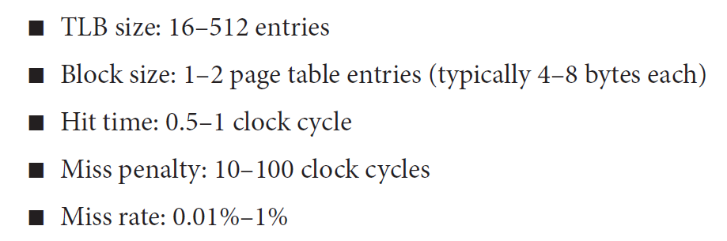 -
小规模的 TLB 采用全联合，大规模的 TLB 联合程度会小一些
例子：The Instrinsity FastMATH TLB
读 / 写穿操作的流程图：
Integration of Virtual Memory, TLBs and Caches⚓︎
现在来看完整的内存层级，包括了虚拟内存、TLB 和缓存。需要注意的内容有：
- 缓存不能保存主存中没有的页，若出现这种情况，需要清除缓存中的对应内容，同时修改页表和 TLB，以维持正常的内存层级。此时若想在缓存中访问此页，就会出现页错误
-
失效问题可能会发生在三个部件中：TLB、页表和缓存
- 根据上面例子给出的内存层级，有以下几种不同失效情况的组合：
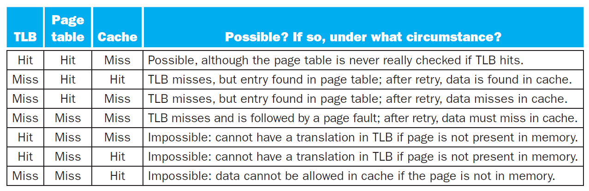注意：
- 后面三种情况是不存在的
- 上表假设在缓存访问地址前，所有的内存地址被转译为物理地址，所以缓存使用的是物理的索引和物理的标签
补充知识
- 虚拟地址缓存 (virtually addressed cache)：一种使用虚拟地址（因此也使用虚拟索引和虚拟标签）的缓存
- 别名 (aliasing)：发生于虚拟内存中，两个虚拟地址使用相同物理页的情况
Protection⚓︎
为了使操作系统能够实现对虚拟内存系统的保护，硬件必须提供至少以下三种基本的能力：
- 提供至少两种模式，对应于用户进程和操作系统进程（后者也称为超级管理员 (supervisor) 进程或核 (kernel) 进程）
- 提供一种处理器状态，使得用户进程只读不写，该状态可以用一个用户 / 超级管理员模式位来表示，表示处理器处于用户模式还是管理员模式。要实现写操作，需要使用一些只有在管理员模式下才能使用的特殊指令
- 提供一种能够在用户和管理员模式之间切换的机制。
- 用户 -> 管理员：系统调用(system call)，它是一种异常 (exception)，通过特殊指令（比如 RISC-V 中的
ecall）将控制权转移给超级用户者模式下的代码空间 - 寄存器 SPEC 用于保存调用系统调用时的 PC 值
sret(supervisor exception return) 指令用于重置为用户模式，并回到 SPEC 所保存 PC 值所在的指令
- 用户 -> 管理员：系统调用(system call)，它是一种异常 (exception)，通过特殊指令（比如 RISC-V 中的
有以下几种保护类型：
-
写入保护：阻止某个进程向另一个进程或操作系统的地址空间写入数据（比如 TLB 用到写访问位来保护页
） 。 -
读取保护：进程不应随便读取别的进程的数据。
- 如果操作系统能够确保页表组织良好，使得独立的虚拟页映射到不相交的物理页，那么就可以确保一个进程不会读到另一个进程上
- 将页表放入受保护的地址空间，使得只有操作系统能够修改页表，而用户无权修改
A Common Framework for Memory Hierarchy⚓︎
学完缓存和虚拟内存后，我们发现看似不同的内存部件实际上遵循某种相似的设计原则，现在我们来总结一下这些设计原则 ~
-
置放方案
-
三种方式：
- 直接映射 (direct mapped)
- 组联合 (set associative)
- 全联合 (fully associative)
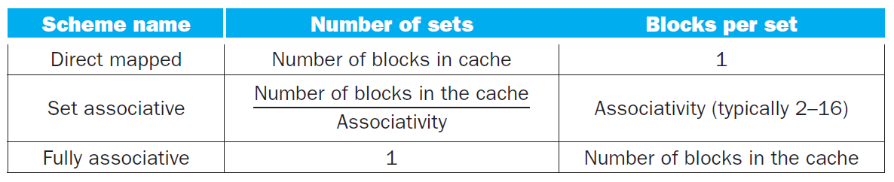 -
联合程度越高，失效率就越低。但随着缓存空间的增大，这一效果会越不明显，因为大缓存的失效率本来就很低
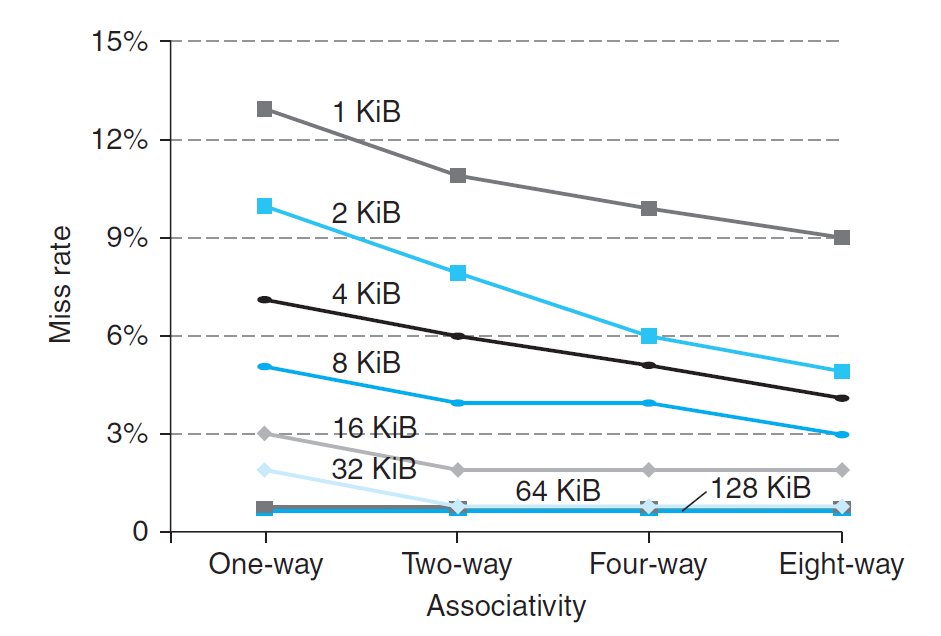 -
但更高的联合程度会带来更大的成本和更慢的访问时间
-
-
寻找方式：需要同时考虑失效和实现联合所需的成本
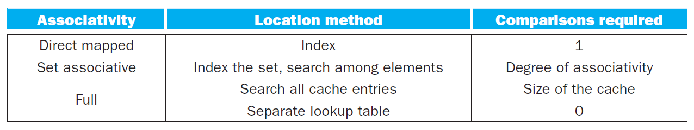- 虚拟缓存使用全联合，且通过页表来保存虚拟地址和物理地址的映射关系。使用全联合的原因有：
- 内存的失效损失非常大，而全联合失效率很低
- 很容易在全联合上建立索引，无需额外的硬件和搜索（搭建页表）
- 缓存和 TLB 使用组联合
- 虚拟缓存使用全联合，且通过页表来保存虚拟地址和物理地址的映射关系。使用全联合的原因有：
-
替换策略：在组联合与全联合中，常需要决定哪个块要被替代
- 随机：在待选块中随机挑选一个，可能需要硬件辅助
- 最早使用(LRU)：最久未被访问过的块会被替代
- 这种方法的成本过于昂贵，因此实际上使用近似实现的方式（只用 1 个位记录）
- 对于更高的联合度，更大的缓存，随机法与 LRU 在表现上没有多大差别，而且随机法的实现更为简单
- 但是在虚拟内存中往往使用近似 LRU 法
- 写入方法：
- 写穿：同时向缓存块和该块对应下级内存的位置上写入数据（缓存采用该方案）
- 优点：简单、成本低、容易实现
- 写回：当缓存块需要被替换时，才会将之前修改过的数据写入下级内存中（虚拟内存采用该方案）
- 优点：仅取决于缓存速率，只需写一次，对高带宽的高效使用（一次写入整个块）
- 写穿：同时向缓存块和该块对应下级内存的位置上写入数据（缓存采用该方案）
Three Cs Model⚓︎
衡量失效的 3C 模型：
- 强制失效(compulsory misses)（或称为冷启动失效 (cold-start misses)
） ：首次访问不存在于缓存的数据块 - 容量失效(capacity misses)：缓存无法保存所有数据块，因此可能出现检索已被替代的缓存块的情况
- 冲突失效(conflict/collision misses)：出现于组联合与直接映射的置放方案中，可能会遇到多个块在同一个集内竞争的情况
下图展示了这三种失效在整个失效中的比例：

三种失效对应的解决方案，以及解决方案可能带来的负面影响：

Controller for a Simple Cache⚓︎
这里我们只介绍一个简单缓存的控制器，首先规定一下何为“简单”的缓存：
- 直接映射
- 写回策略
- 块大小为四字（16 字节）
- 缓存大小为 16KiB，因此共有 1024 个块
- 32 位地址
- 每个块额外加一个合法位
对于这样的缓存，它的控制器本质上是一个有限状态机(finite-state machine)。它是一个顺序逻辑函数，由一组输入、一组输出、一个生成下一状态的函数和一个输出函数（这些函数均根据当前状态和输入进行计算）构成（实际上这是摩尔 (Moore) 型状态机

缓存控制器的状态图如下所示：
四种状态的简介：
注：Ready 信号用于表示缓存操作是否已经完成
- 空闲 (idle)：等待来自处理器的合法的读 / 写请求，若得到请求则进入下一状态（比较标签）
- 比较标签 (compare tag)：检测读 / 写是否命中 / 失效
- 若缓存块的数据合法，且标签位成功匹配，说明成功命中，并将 Cache Ready 信号置 1。如果是写操作，还需将脏位置 1。然后回到空闲状态。
- 若发生失效，首先更新缓存标签，然后根据脏位决定下一状态：若脏位为 1，进入写回状态；否则进入分配状态
- 写回 (write-back)：根据标签和索引将缓存块的数据写入内存中，然后等待 Ready 信号。当完成对内存的写入时，进入分配状态
- 分配 (allocate)：从内存中获取新的数据块，然后等待 Ready 信号。当完成对内存的读取时，有限状态机会回到比较标签的状态
这个有限状态机还可以再扩展，以提升性能：
- 增加更多的状态
- 增加一个写缓冲器
Parallelism⚓︎
Fallacies and Pitfalls⚓︎
评论区